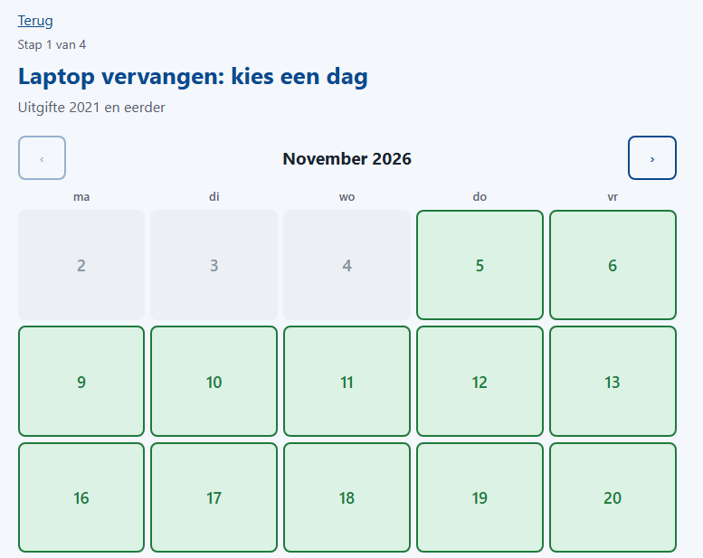
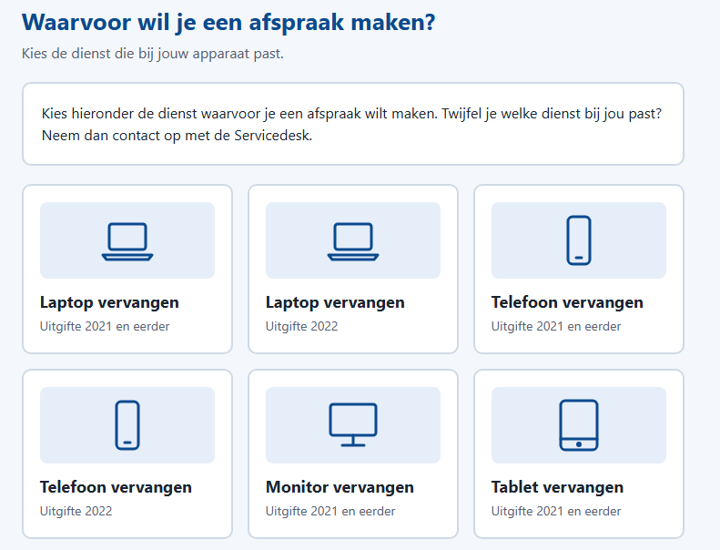
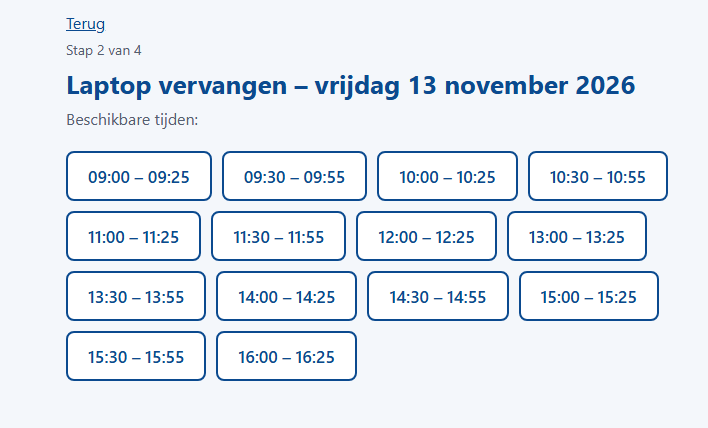
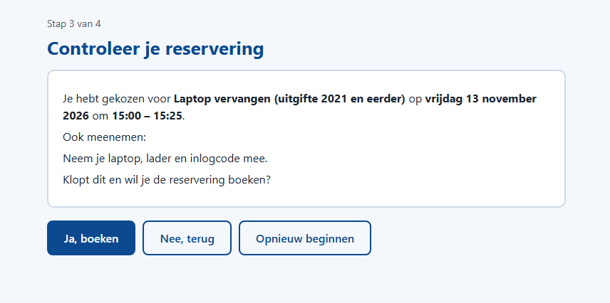
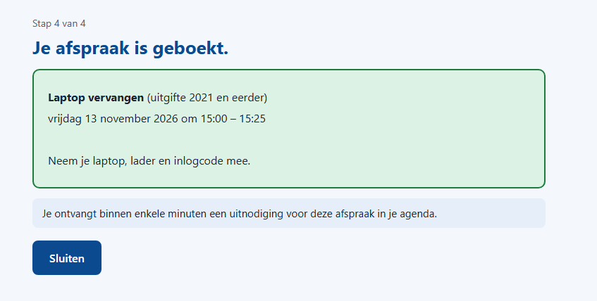

For IT service desks that work by appointment
People book their own slot at the desk: a device replacement, a new starter, a hand-in, or anything that takes more than a quick question. The desk never overbooks, and nothing leaves your network: no cloud, no tracking, no subscription. Open source, so you stay in control.
Self-hosted on Windows Server with IIS. Free and open source. Not a desk-sharing or room-booking tool: it books time with your service desk.

The booking screens
Screenshots with test data. The screens are in Dutch today; a language file for other languages is planned.




What it does
Define what people can book: a device replacement, a new starter, handing in equipment, a longer issue at the desk. Each service has its own duration, instructions and booking period.
People see days with room in green and only the times that are actually free. Opening hours, breaks, a buffer between visits and the number of seats at the counter are all settings.
All services share the seats at the counter. Fewer seats on a given date, weekday or half day, closed days, a minimum lead time and a booking window are all settings. Lowering capacity or closing a day with bookings shows you who is affected before you save.
People see their own appointment, and can move or cancel it up to a deadline you set per service. One active appointment per person per service.
A chosen slot is held while the person confirms, with a countdown on the screen, so two people never book the last seat at the same moment. Booking is checked again on the server.
Each booking becomes an appointment in the desk's Exchange calendar, with an invitation to the person. Moving or cancelling updates it. A reminder mail goes out a set number of days before, from the desk's own address. Texts are your own templates: the appointment text per service, and one text each for the reminder, the re-invitation and a cancellation by the desk.
A booking is saved first and sent to the calendar afterwards, with retries. If Exchange is down for a while, people can still book, and the desk sees what is still waiting.
Rules per service on organisation and department, with personal exceptions. People who may not book a service do not see it, or see why they cannot.
A day overview and a printable PDF with a box to tick on arrival. The desk records who showed up, can invite a no-show to book again with one click, and can cancel an appointment or a whole day with a reason that is mailed to the person. No penalties.
Week overview with occupancy, progress per service, no-shows and bookings that no longer fit the rules, as PDF with your logo. The next working day's list can be mailed to the desk automatically. A searchable booking list exports to CSV and Excel.
A banner at the top of the booking pages for closures and disruptions, with a start and end date and three levels of urgency.
Services, rules, texts, dates, mail and sign-in settings live in the admin portal and apply at once. No config files for daily work. Three roles: user, desk staff and administrator.
The booking flow
Tiles for the services this person may book.
Calendar with free days in green, opened on the first day with room.
Only free slots, grouped by morning and afternoon. The chosen one is held for ten minutes.
A summary in plain words, then an invitation in the person's calendar.
For administrators
One web app, one database file. It runs with no internet access, uses your existing sign-in, and installs with a script that checks itself.
The deploy script sets up the site, the app pool, file permissions and https, can run as a dry run, and ends with a self check. Updates keep a copy of the previous version and the database.
A daily database backup with an integrity check and automatic pruning, and a nightly job that deletes or anonymises data past its retention period.
A health endpoint for monitoring and fixed event numbers in the Windows event log, with no personal data in the messages.
Every admin and desk action is logged. Filter by period, kind of action and who did it, search the text, and export to CSV or Excel.
Strict security headers, CSRF protection, rate limits per person and an IP restriction for administration. Error messages use fixed texts; raw system errors only go to the server log.
Requirements
Privacy
Name, e-mail address, organisation, department and a username, taken from your sign-in. No phone numbers.
Appointments are anonymised after a period you choose, 12 months by default. The audit log has its own period.
A page generated from the code lists every table and column, why it exists, who sees it and how long it is kept. It cannot drift from the real database because a test compares them.
Download
Each release is a zip with a checksum file, published on GitHub. Check the checksum on the server before you install.
The release links appear when the project is made public. Licence to be announced.